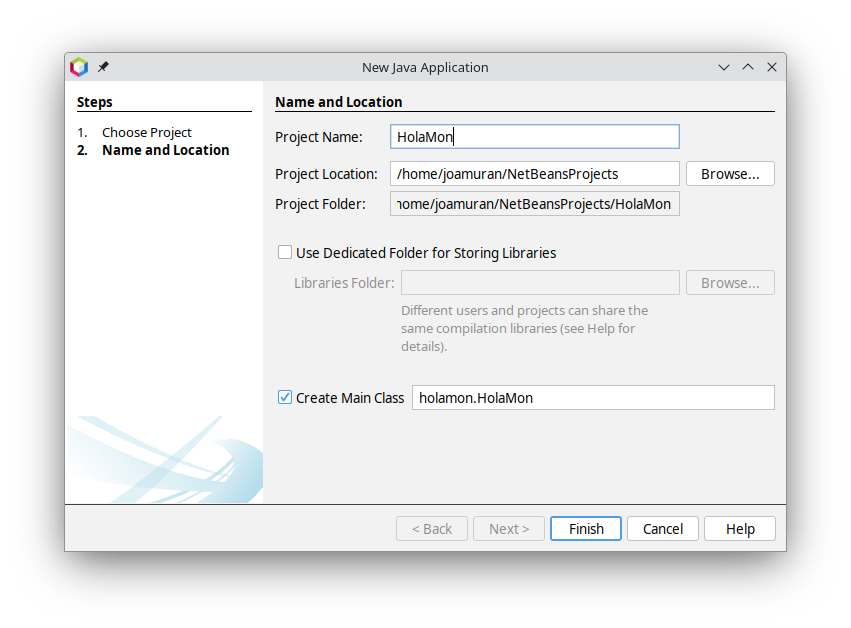

3. Netbeans
Netbeans
En aquest apartat anem a introduir-nos en l'IDE Netbeans, per al desenvolupament d'aplicacions Java. NetBeans és un entorn de desenvolupament integrat (IDE) de codi obert, desenvolupada per l'Apache Foundation, que proporciona eines potents per a la creació, depuració i execució de programes Java.
Instal·lació de NetBeans
Per tal d'instal·lar Apache Netbeans, i amb les variables JAVA_HOME i PATH actualitzades, descarregarem l'IDE des de la mateixa web del projecte, concretament des de la pàgina de descàrregues.
To i que podem descarregar els fitxers executables per als nostres sistemes, anem a descarregar els binaris, que són independents de la plataforma, i s'executen sobre la màquina virtual de Java: netbeans-23-bin.zip.
Una vegada descarregat el fitxer, per exemple a una carpeta devtools, dins el vostre directori d'usuari, el descomprimim, i busquem a dins la carpeta bin l'executable. Per a Linux aquest serà netbeans i per a Windows netbeans.exe o netbeans64.exe.
Creació d'un Projecte Java
Per crear un projecte, seguirem els següents pasos:
- Dins de Netbeans seleccionem File > New Project o fem clic en el botó de "Nou Projecte" en la barra d'eines.
- En l'assistent de nou projecte, seleccionem Java with Ant> Java Application i fem clic en Next.
- Introduim el nom del projecte (per exemple,
HolaMon) i especifiquem la seua ubicació.  - Fem clic en Finish per crear el projecte.
{kind=link}
Això es generarà una estructura lògica de paquets per al projecte, que podem vore a la part esquerra, sota la pestanya Project:
{kind=link}
Això ens diu que tenim el projecte HolaMon, que té com a paquet font holamon.
A la pestanya Files, podem veure també l'estructura de directoris reals que ha creat, i que es correspon a un projecte Java de tipus Ant:
{kind=link}
Com veiem, dins la carpeta HolaMon, entre d'altres, tenim la carpeta src amb el codi font del programa, seguint l'estructura indicada de paquets, en aquest cas, el paquet holamon, que té la carpeta holamon.
Si examinem el codi que hi ha a dins, veurem el següent codi autogenerat, amb una plantilla estàndard. Observeu el nom del paquet amb package holamon:
/*
* Click nbfs://nbhost/SystemFileSystem/Templates/Licenses/license-default.txt to change this license
* Click nbfs://nbhost/SystemFileSystem/Templates/Classes/Main.java to edit this template
*/
package holamon;
/**
*
* @author joamuran
*/
public class HolaMon {
/**
* @param args the command line arguments
*/
public static void main(String[] args) {
// TODO code application logic here
}
}
Sobre l'estructura de carpetes i els paquets
Els packages o paqauets en Java són una manera d’organitzar les classes i altres tipus de dades en grups lògics, i ajuda a mantenir el codi net i estructurat, facilitant la gestió i reutilització del codi. Els packages també permeten evitar conflictes de noms entre classes, ja que dues classes amb el mateix nom poden coexistir en packages diferents.
El nom dels packages està estretament relacionat amb l'estructura de carpetes on es troben. Un nom de paquet pot contindre punts (.) per separar subpaquets. Per exemple, un paquet: com.ieseljust.edd.holamon, seria un paquet holamon dins el paquet edd, que està dins de ieseljust, que està dins de com. És habitual fer ús del nom completament qualificat de l'organització com a prefix del nom dels paquets.
Aquesta organització en subpaquets es traduirà posteriorment en una organització completa de carpetes dins la carpeta src, de manera que cada paquet dins altre és una carpeta dins d'altre. És a dir, el paquet com.ieseljust.edd.holamon, generarà l'estructura de carpetes:
Edició, execució i depuració
Bé, una vegada creat i examinada la classe, anem a editar el codi generat, completant-lo amb:
package holamon;
public class HolaMon {
public static void main(String[] args) {
System.out.println("Hola Món");
for (int i = 0; i < 5; i++) {
if (i%2==0)
System.out.println(i+" és parell");
}
}
}
Per tal d'executar el codi, farem clic en el botó Run Project o bé amb la tecla F6.
Depuració
Per afegir un punt de ruptura, fem clic en el marge esquerre de la línia on volguem afegir-lo (per exemple, en la línia System.out.println(i+" és parell");).
Per iniciar la depuració, farem clic dret sobre el projecte, i seleccionarem Debug, o bé, directament, seleccionem Debug Project sota el menú Debug, o des de la barra d'eines.
El programa s’executarà fins al punt de ruptura, permetent-nos inspeccionar el valor de les variables i executar el codi pas a pas.
{kind=link}
Per tal de realitzar l'execució pas a pas, fem ús de les icones de la barra d’eines de depuració per a continuar l’execució (F5 per continuar, F7 per entrar en una funció, F8 per saltar a la següent línia).
Actualitzacions de Netbeans
Per tal d'actualitzar Netbeans, podem seleccionar, des del menú Help l'opció Check for Updates. En cas que hi hagen actualitzacions disponibles, se'ns proporcionaran les instruccions per descarregar-les i instal·lar-les.
En cas contrari, ens dirà que l'IDE ja està actualitzat:
{kind=link}